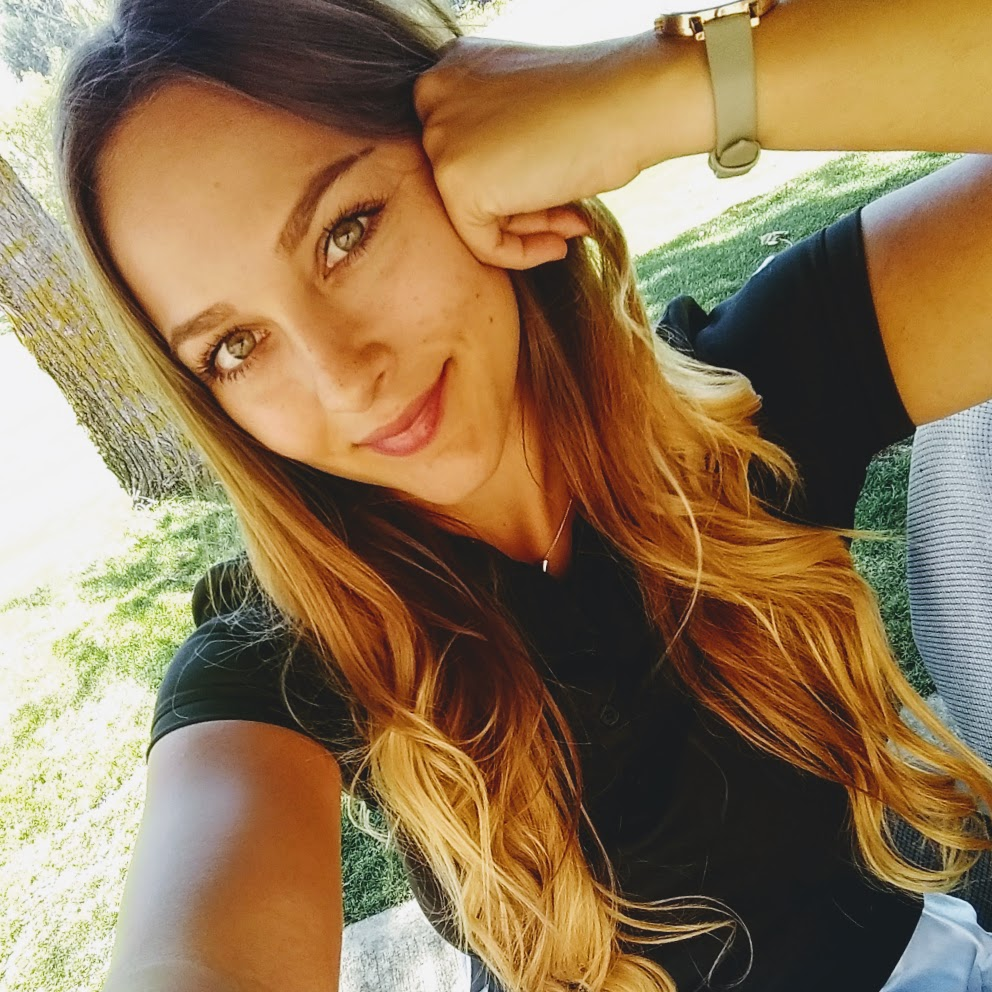

After recently earning my AA in mathematics, I realized that
while I had a real ability with numbers and theories, I had more of a passion for tech. Having no real influences in my immediate
family or social circle, I took my interest to the web for hours on end, for months (as many do) to gain a base understanding of how
languages, front end, back end, data base, API, UI, and security, all interact for user experience. Learning how to learn with a
career aimed trajectory was the biggest challenge. I’ve felt as though stuck in the learning loop for too long. It is time to network,
pursue career opportunities and build ideas into products using the skills of a Full Stack Developer.